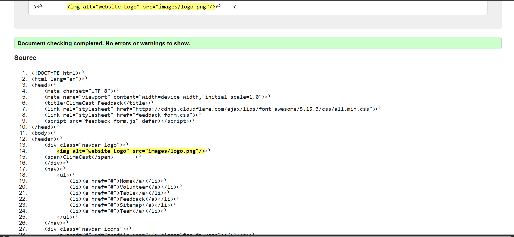
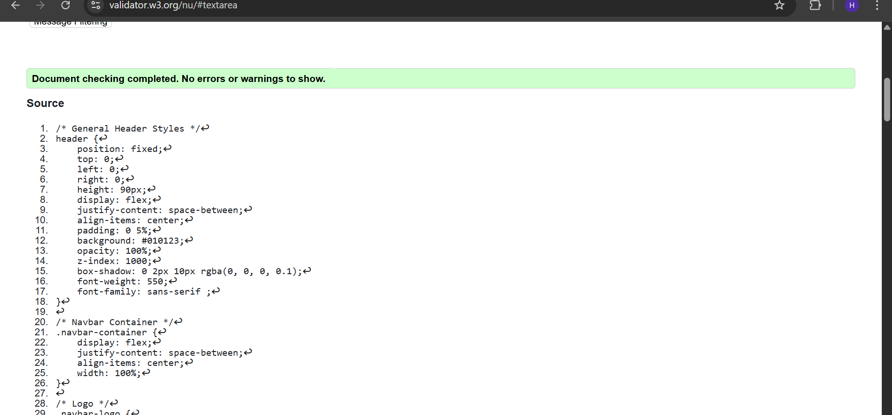
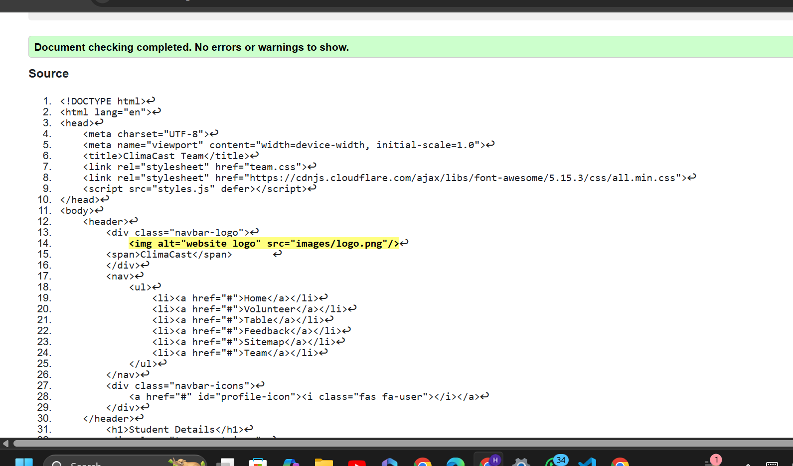
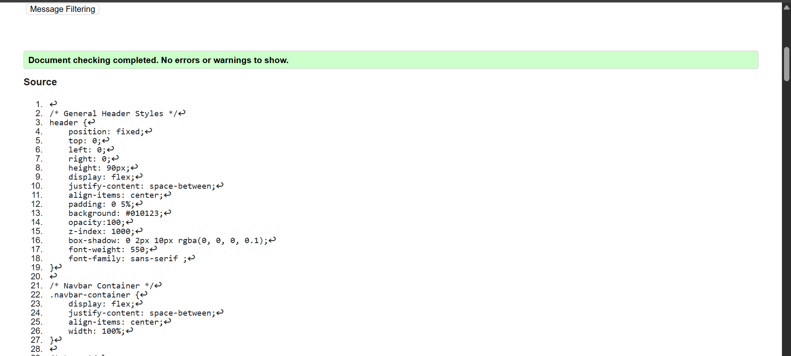
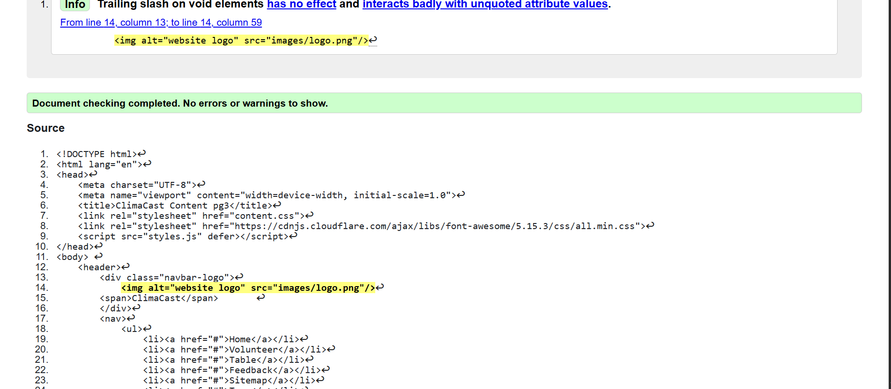
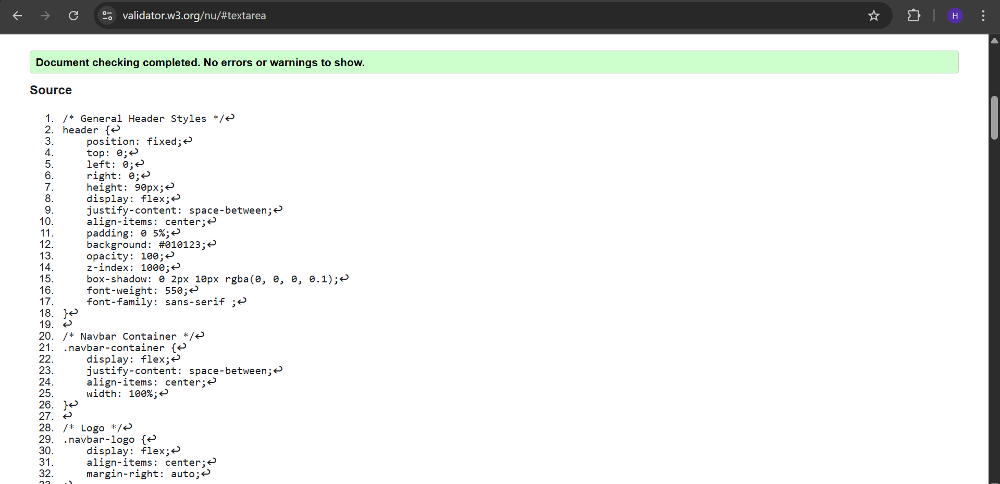

feedback

feedback validation html

feedback validation css
Back to Page Editor page
Team

Team validation html

Team validation Css
Back to Page Editor page
Content Page validation report

Team validation html

Team validation css